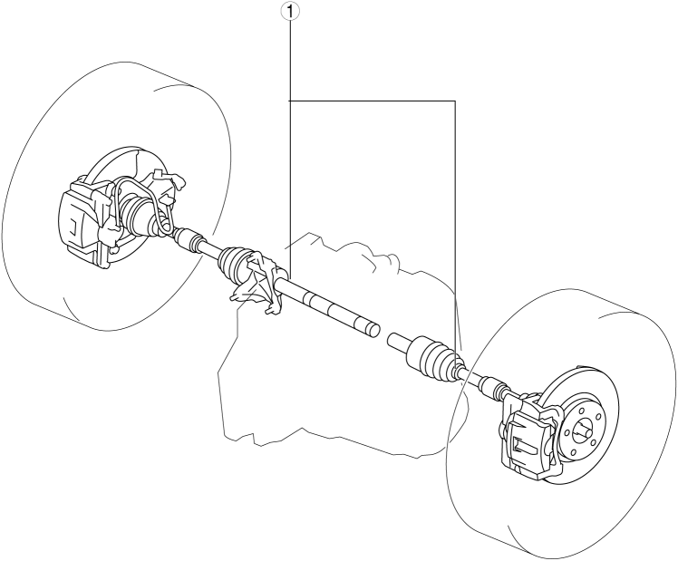

1
Front drive shaft
(See FRONT DRIVE SHAFT INSPECTION.)
(See FRONT DRIVE SHAFT REMOVAL/INSTALLATION.)
(See FRONT DRIVE SHAFT (TRIPOD JOINT) DISASSEMBLY/ASSEMBLY.)
(See FRONT DRIVE SHAFT (DOUBLE OFFSET JOINT) DISASSEMBLY/ASSEMBLY.)